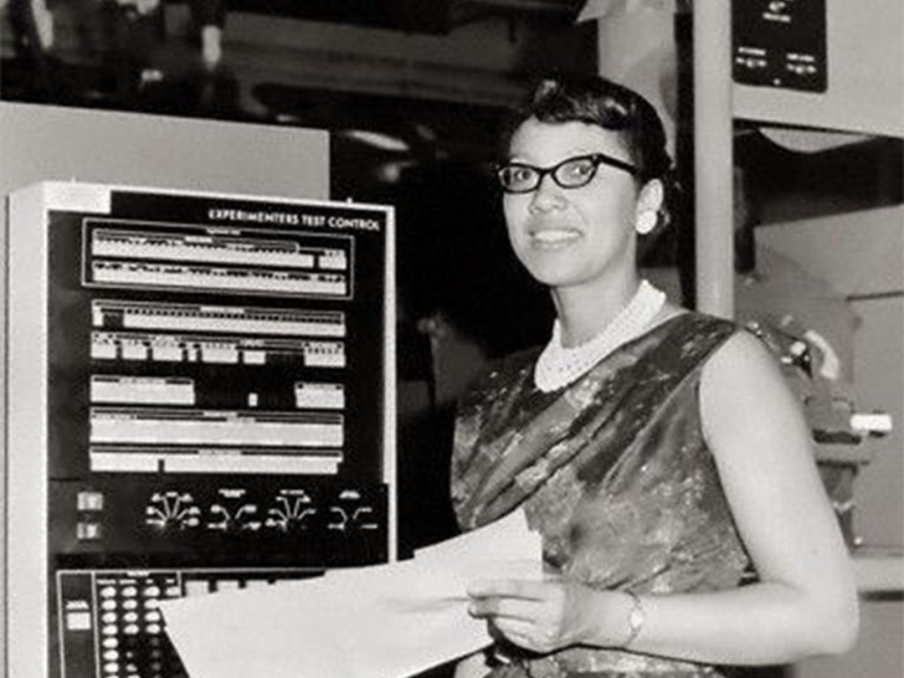
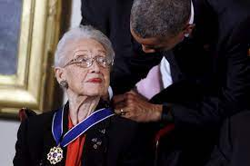

Katherine G. Johnson - Talentos Ocultos (Enero 6, 2017)
En esta ocasion hablaremos sobre Katherine G. Johnson, quien ayudo a la NASA a enviar el primer hombre a la orbita espacial y despues de esto a la luna.
Katherine G. Jonhson fue una persona que paso desapercibida por el mundo hasta el año 2017, en este año se estreno la pelicula "Talentos ocultos". Donde se hace conocer esta mujer brillante, se mostro al publico el transfondo de la colonizacion lunar que ejecuto la NASA.


Katherine G. Jhonson
Khaterine G. Jhonson Premiada por Barack Obama
El aporte que hizo Khaterine G. hizo que se hiciera realidad el proyecto Apolo 11(1)